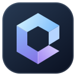
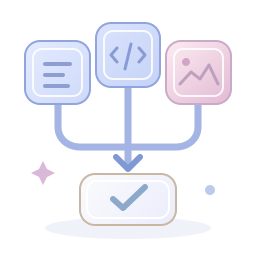

调用能力与工作流 单模型工作
一起理清思路，找到答案Enter 发送 · Shift + Enter 换行

Cupbox你的日常工作搭子从常用功能开始，按需调整。
先选模型与外观，其余功能在需要时再开启。
桌宠、协作和专项工作流均可按需使用。先完成模型连接，就可以开始对话。
银发、樱花与蓝色蝴蝶结。你的吉祥物，今天也在这里。
从一顿小鱼饭、一场小游戏开始。
手动试穿会暂停自动换装；重新开启开关，即可继续跟随节日。
当前：标准录音 4 · 2× 按压音效
内置录音以 2 倍速播放一次。自定义音效按文件名数字顺序播放：1 按下、2 松开，每个不超过 2 MB；自定义文件仅保存在本机。
好感度来自上方的喂食、玩耍等互动；动作预览不计好感奖励。长按或拖动时像轻拎后颈一样垂手悬空，只轻轻眨眼，松手后落向当前屏幕工作区底部，并缓冲站稳。关闭互动动画后停用重力动画。桌宠默认关闭，偏好和位置保存在本机；不读屏、不监听聊天、不控制其他应用。
选择 Agent 的工具和工作方式。日常任务用「标准模式」，专项任务选择对应预设。
点击卡片切换，下次发送时生效。预设不会授予额外权限；查看说明不会改变当前选择。
使用本机已安装的三月七小助手执行任务。请先在小助手 Launcher 完成游戏路径、任务和完成后动作等设置，再选择 March7th Assistant.exe。运行期间游戏可能占用鼠标和键盘；Cupbox 日志中的进程退出码不代表游戏任务已完成，请核对小助手日志。
可能占用鼠标键盘、改变游戏进度或执行小助手配置的完成后动作。每次启动需确认，沙箱模式不可运行；启动后撤销桌面协作授权。紧急停止：Ctrl+Alt+F12。
待运行
Cupbox 已启用多开检测：一次仅运行一个 Cupbox，重复打开会显示已有窗口。三月七工作流同一时间仅可运行一项。
选好服务商，再填写密钥即可。
配置与密钥存放于：…
数据默认存放在系统「文档」目录（Documents/Cupbox）；同一份配置供 CLI、MCP 与桌面版共用，密钥仅本机保存、不上传。
独立保存连接，在对话中勾选需要的能力。

默认关闭。开启后可同时调用多种能力，并使用项目拆分与审阅工作流。
每个子项目、规划、整合及审阅都会产生独立的 API 调用费用。并行制作阶段独立产出，执行模式下最后统一操作文件。
子项目在勾选模型间轮流分配。留空时使用对话中选择的文本模型；规划与整合始终由该模型负责。
按服务商实际支持能力勾选。语音用于文本转语音，视觉用于参考图片分析。
自动识别不支持时，可按提供方文档选择参数格式；不确定时保留默认。
绘图使用 images/generations；语音使用 audio/speech。视频目前适配硅基流动协议，尺寸 1280×720。实际支持的参数以服务商为准。
文件操作默认只预览；确认执行需要预览令牌。Shell、终端输入、敏感文件与策略变更始终需要人工批准。HTTP 禁止访问私网。
授权保存在本机。仓库内 .cupbox/policy.json 仅作为提案，不会自动放宽权限。修改后必须明确批准。
30 款内置样式 · 7 款日常抱抱、11 款节日服装与几何标识。
正在加载 Logo 样式…
选择后自动保存，同步到标题栏、任务栏、托盘、启动动画与关于页面；新打开的窗口也会沿用。自定义图片保存在本机文档 Cupbox/branding 内，更换样式不会删除原图。
选一处喜欢的风景，留一份舒服的专注。
陪你把小事，变成美好的一天。
PNG、JPG、WebP · 最大 20 MB
数值越高，文字越清晰、背景越柔和。
内置四首，也可以导入自己的本地音频。
音乐音量与桌宠按压音效分别控制。
关闭歌曲右侧开关即可禁用，所有播放模式都会跳过它。系统歌曲只能禁用，不能删除。自定义歌曲可删除，仅删除 Cupbox 的导入副本，原文件不受影响。支持 MP3、WAV、OGG、M4A、FLAC、AAC、WebM，每首最大 80 MB，一次最多 20 首；不上传网络。
同时作用于本地工具和 AI 的工具调用。
选择开场效果，也可以放入自己的动画。
让灵感，轻轻启程。
可随时点击跳过，或按 Esc 进入工作台。
GIF、MP4、WebM 或图片 · 最大 40 MB
自动保存到本机；视频静音播放；开启系统“减少动态效果”时会自动跳过。
提供预览令牌、原子读写、精确编辑、补丁、复制移动、可恢复删除与回滚。执行任务模式下可用，限制在工作目录；写操作遵循批准设置。子项目只写各自的交付目录。
CUPBOX_UPDATE_DISABLE=1 可关闭检查announcement.json · 检查失败时不会打扰你 · CUPBOX_ANNOUNCEMENT_DISABLE=1 可关闭仅对本次请求有效 · Esc 拒绝